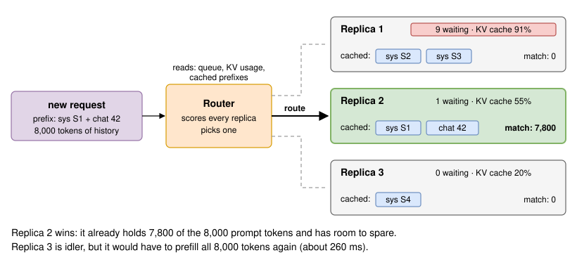
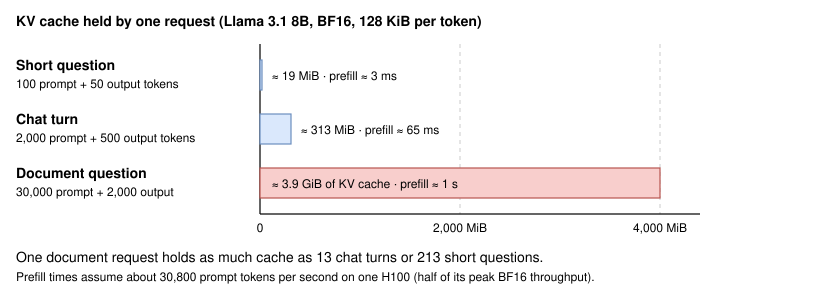
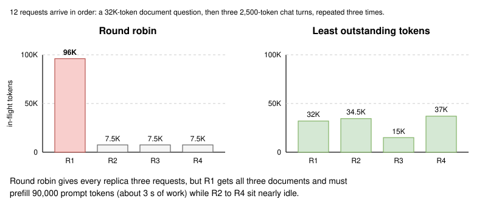
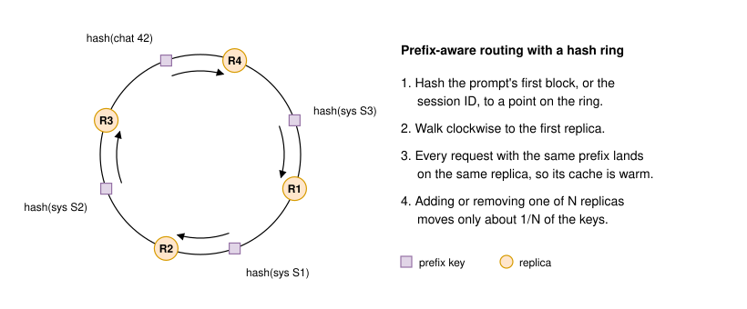
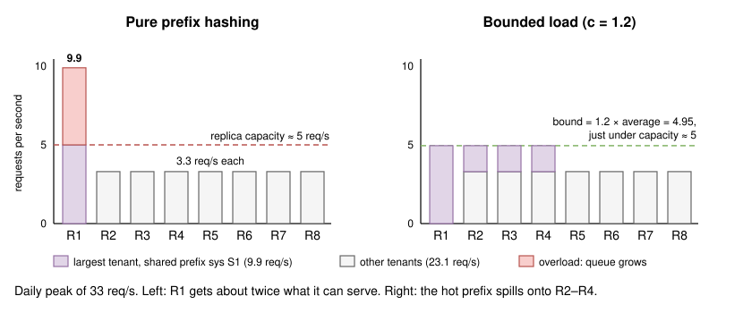
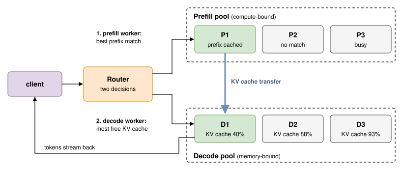
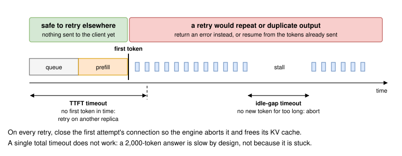

Request Routing
Introduction
As soon as a model runs on more than one replica, something has to decide which replica serves each request. For a web service this is an old, solved problem: put a load balancer in front, spread requests evenly, and every server stays equally busy. That works because web requests are short, similar in cost, and stateless, so any server is as good as any other.
LLM requests break all three assumptions. One request may carry a 100-token question and another a 30,000-token document, so their cost differs by more than 100×. Each request occupies its replica for seconds or minutes while tokens stream out. Most importantly, replicas are not interchangeable: each one holds a prefix cache of recent prompts in GPU memory (Lesson 24, Prefix Caching), so the same request can be nearly free on one replica and expensive on another.
A request router (also called an inference gateway or endpoint picker) is the component that makes this choice using LLM-specific signals: queue length, KV cache usage, and which prefixes each replica already holds. Figure 1 shows the idea.

In this lesson, we look at why LLM routing differs from web load balancing, compare the main routing policies, work through the tension between cache hits and even load, and cover the parts of routing that sit around the core choice: multiple models and LoRA adapters, priority classes, disaggregated serving, and retries that do not waste GPU time.
Clarifying the Problem
Routing questions usually start once a team has outgrown a single replica. Here is a typical exchange between a candidate and an interviewer:
Candidate: Which model are we serving, and on what hardware?
Interviewer: Llama 3.1 8B Instruct in BF16 on vLLM, with prefix caching on. We run 8 replicas, each on one H100.
Candidate: What does the traffic look like?
Interviewer: About 1,000 requests per minute on average, about 16.7 per second, rising to about 2,000 per minute, 33 per second, at the daily peak. Most are multi-turn chat with about 2,000 prompt tokens and 500 output tokens. About 5% are questions about uploaded documents with 30,000-token prompts.
Candidate: How much of each prompt is shared between requests?
Interviewer: Each of our 50 customer apps has its own 1,500-token system prompt. The largest customer sends 30% of all traffic. Every chat turn also resends the conversation so far.
Candidate: What latency do we need?
Interviewer: The p95 time to first token should stay under 500 ms, and the p95 time per output token under 25 ms.
Candidate: Is anything else running on the fleet?
Interviewer: Twelve enterprise customers use their own LoRA adapters on the same base model, and a nightly batch job summarizes support tickets.
Candidate: Do we know what one replica can handle?
Interviewer: One replica meets both targets up to about 5 requests per second of this mix, about 53 concurrent streams (Lesson 19, GPU Utilization).
So the fleet can serve about 8 × 5 = 40 requests per second and runs at 33 at the daily peak, about 83% utilization. The question underneath is: how do we spread 33 requests per second across 8 replicas so that no replica overloads, while still sending each request to a replica that already holds its prefix? To answer it, we first need to see why the usual load balancing tools fall short.
Why LLM Routing Is Different
Requests differ by 100× or more in cost
A web load balancer treats every request as one unit of work. For an LLM, the work depends on the number of tokens, and token counts vary enormously. Figure 2 compares three requests from our traffic by the KV cache each holds (128 KiB per token for Llama 3.1 8B, from Lesson 3, KV Cache) and by the prefill compute each needs.

For the prefill times we use a rough throughput figure. A forward pass costs about 2 FLOPs per parameter per token, so Llama 3.1 8B needs about 2 × 8.03B ≈ 16 GFLOPs per prompt token. If prefill reaches half of the H100's 989 TFLOPS of dense BF16 compute, it processes about ≈ 30,800 tokens per second. A 2,000-token prompt then takes about 65 ms and a 30,000-token prompt about 1 s. A router that counts requests sees a short question and a document as the same thing, even though one costs over 200 times more.
Streams are long-lived
A web request finishes in milliseconds. A chat request stays on its replica until the last token is sent: at about 21 ms per decode step (Lesson 19), streaming 500 tokens takes about 10.5 seconds. Little's law tells us how many requests are in flight at once:
That is about 43 per replica at the daily peak. Every routing decision commits a replica for the life of the stream; we cannot move a request later without moving its KV cache too. Mistakes therefore persist for seconds, not milliseconds. Balancing at the connection level (layer 4) is even worse, because one HTTP/2 connection from an API client can carry hundreds of requests to whichever replica it first landed on.
Replicas hold state
With prefix caching, a replica keeps the KV blocks of recent prompts and reuses them when a new prompt starts with the same tokens. In our traffic this matters a lot. Consider the fifth turn of a conversation: 1,500 tokens of system prompt plus about 6,300 tokens of history plus a 200-token new message. On the replica that served turn four, only the 200 new tokens need prefill, about 7 ms. On any other replica, all 8,000 tokens need prefill, about 260 ms, which is over half of the 500 ms TTFT budget.
With 8 replicas and a cache-blind policy, the next turn lands on the right replica only 1 time in 8. Routing is how a fleet turns per-replica prefix caching into fleet-wide cache hits.
State the three differences up front: requests vary 100× in cost, streams hold a replica for seconds, and replicas carry cache state. Each one rules out a familiar policy, which gives your answer a clear structure.
Routing Policies
Round robin and random
Round robin sends request to replica . Random routing picks a replica uniformly. Both spread request counts evenly and need no state, which is why they are the defaults in most load balancers. Both are blind to cost and to cache contents.
Figure 3 shows how badly cost blindness can go. Twelve requests arrive in a repeating pattern of one document question followed by three chat turns. Round robin over four replicas sends every document to the same replica, because the pattern repeats every four requests. Each replica receives three requests, yet one holds 96,000 tokens and the others 7,500 each.

The aligned pattern is contrived, but real traffic is lumpy in the same way: a customer's batch script sends ten documents in a row, and a random policy will occasionally stack them.
Least outstanding requests and the power of two choices
Least outstanding requests sends each request to the replica with the fewest requests in flight. The router can count these itself, adding one when it forwards a request and subtracting one when the stream ends, so the signal is always fresh. It adapts to slow replicas, which build up in-flight requests and stop receiving new ones.
Scanning every replica is fine for 8 replicas, but a fleet with many router instances has a subtler problem: if every router sends to the same least-loaded replica at the same moment, they all pile onto it. The power of two choices fixes this by sampling two replicas at random and picking the less loaded one. Mitzenmacher showed that two choices give an exponential improvement over one random choice, while a third choice adds only a constant factor [1]. Envoy's least-request load balancer uses this method by default [2].
In Figure 3, however, least outstanding requests would behave exactly like round robin: every replica has three requests in flight. Counting requests is better than counting nothing, but it still treats a document like a short question.
Least load by tokens or KV cache usage
The fix is to measure load in the units that matter. Two sources of load information are common:
- Router-side token accounting: the router tokenizes the prompt and tracks, per replica, the outstanding tokens of every request it has sent, prompt tokens plus expected output. This is fresh and cheap, and it is what the right side of Figure 3 uses.
- Engine metrics: the router polls each replica's metrics endpoint. vLLM exposes
vllm:num_requests_running,vllm:num_requests_waiting, andvllm:kv_cache_usage_perc[3]. These reflect the engine's true state, including requests sent by other routers, but they are only as fresh as the last poll.
The waiting count is usually the most direct sign of trouble: a replica with requests waiting is already adding queue time to their TTFT. KV cache usage near 100% warns that the engine will soon preempt requests (Lesson 3). Many routers combine both into one load score.
Prefix-aware routing with consistent hashing
Load-based policies spread work well but scatter prefixes. The simplest way to keep a prefix on one replica is to hash it. The router computes a key from the start of the prompt, such as a hash of the first block of tokens or of the system prompt, and maps the key to a replica with consistent hashing, as Figure 4 shows.

Consistent hashing has a useful property: when one of replicas joins or leaves, only about of the keys move [2], so an autoscaling event (Lesson 22, Autoscaling) does not wipe out every replica's cache at once. Its weakness is choosing what to hash. Hashing only the first block lumps together every tenant that shares a generic opening line; hashing the whole prompt never matches anything, because every prompt ends differently.
Cache-aware routing
A more precise approach matches each prompt against what each replica actually holds. The router splits the prompt into blocks, hashes each block together with all the blocks before it, and asks how many leading blocks each replica already has. Routers learn cache contents in one of two ways:
- Approximate tracking: the router remembers which prompts it sent where. SGLang's engine already organizes its own cache as a radix tree [5], and SGLang's router keeps an approximate radix tree of past prompts for each worker, held in the router's memory rather than queried from the workers [4]. This needs nothing from the engine but drifts when the engine evicts blocks the router still believes are cached.
- Exact tracking from KV events: engines publish an event whenever they store or evict a block, and the router keeps an index of them. NVIDIA Dynamo's KV router consumes such events by default and falls back to approximate prediction without them [6].
With a match length per replica, the router still has to weigh cache hits against load. Dynamo's router scores each worker by the prompt blocks it would still have to prefill, multiplied by a tunable weight, plus the KV blocks it is already decoding, and picks the lowest cost [6]. In general form:
A large chases cache hits and helps time to first token; a small spreads decode work and helps inter-token latency. SGLang's router makes the trade with explicit thresholds instead, shown in Figure 5: while the fleet is balanced it follows the cache, and once the gap between the busiest and idlest worker exceeds both an absolute and a relative threshold, it switches to shortest-queue routing until balance returns [4].

Session affinity for multi-turn chat
For chat, the simplest proxy for the prefix is the conversation itself. Session affinity hashes a session or user ID from a request header, so every turn of a conversation lands on the same replica. The vLLM production stack router offers this as --routing-logic session with --session-key naming the header [7]. Session affinity needs no tokenizer and no cache tracking, which makes it a good first step. Its limits are that it knows nothing about load, so a few very long sessions can pile onto one replica, and it does not share system prompts across sessions.
| Policy | Signal used | Cache hits | Load balance | Main weakness |
|---|---|---|---|---|
| Round robin / random | None | About 1/N by chance | Even counts, uneven work | Blind to cost and cache |
| Least outstanding requests (or two choices) | In-flight count | About 1/N | Good for similar requests | Treats a document like a short question |
| Least load (tokens, KV usage, queue) | Token accounting or engine metrics | About 1/N | Best | Scatters prefixes across replicas |
| Prefix hash (consistent hashing) | Hash of the prompt start | High for stable prefixes | Poor for hot prefixes | Choice of what to hash; hot spots |
| Session affinity | Session ID header | High within a conversation | Poor for long sessions | No load awareness, no cross-session sharing |
| Cache-aware with load guard | Per-replica prefix match plus load | High | Good, bounded by thresholds | Router state; needs a tokenizer or KV events |
Table 1: Request routing policies for LLM serving
The tension between cache hits and load balance
Every cache-seeking policy runs into the same problem: popular prefixes concentrate load. Our largest customer sends 30% of traffic, all starting with system prompt S1. At the daily peak, pure prefix hashing sends all of it, 0.3 × 33 ≈ 10 requests per second, to one replica that can serve about 5. That replica's queue grows by about 5 requests every second. After one minute it holds about 300 waiting requests, so a new arrival waits about 300 ÷ 5 = 60 seconds. Meanwhile the other seven replicas share the remaining 23 requests per second, about 3.3 each, below capacity. The left side of Figure 6 shows this.

The key insight is to compare what each choice costs. A cache miss on the 1,500-token system prompt costs about 1,500 ÷ 30,800 ≈ 49 ms of extra prefill, once. A queue costs every waiting request its full wait. Whenever the queue on the cached replica would add more than about 50 ms, sending the request elsewhere is cheaper, even though it misses the cache. Routers bound the tension in a few ways:
- Bounded loads: consistent hashing with bounded loads caps every replica at times the average load and forwards the overflow to the next replica on the ring [8]. The bound must stay under capacity: at the daily peak the average replica carries about 4.1 requests per second against a capacity of about 5, so can be at most about 1.2. With about 43 requests in flight per replica and , the cap is requests in flight, just under the 53 streams a replica holds at its latency targets, or about 4.95 requests per second in the rate terms of Figure 6. The hot prefix spills onto as many replicas as it needs, and each spill replica pays one cold prefill before it, too, holds the prefix. The right side of Figure 6 shows the result.
- Imbalance thresholds: SGLang's router abandons cache affinity whenever the load gap exceeds its thresholds, as in Figure 5 [4].
- Weighted cost: Dynamo-style scoring lets load outweigh a cache hit once the queue is long enough [6].
- Joint scheduling: Preble, a research system, schedules prompts across GPUs by weighing prefix reuse and load together rather than one after the other [9].
Which policy fits our deployment?
Our traffic is dominated by multi-turn chat with long, growing histories, so a cache hit is worth up to about 260 ms of prefill on a 500 ms budget. That rules out cache-blind policies. Pure prefix hashing is ruled out by the 30% tenant. We choose cache-aware routing with a load bound: send each request to the replica with the longest cached prefix among replicas whose in-flight load is below 1.2 times the average, and measure load in outstanding tokens rather than requests so document questions count for what they cost. The bound turns the hot tenant into a prefix shared by a few replicas instead of a hot spot on one.
We do not need to build this ourselves. On Kubernetes with vLLM, the Gateway API Inference Extension and llm-d provide cache- and load-aware endpoint picking; on SGLang, its router's cache_aware policy does this; Dynamo provides a KV-aware router for vLLM, SGLang, and TensorRT-LLM workers (see the next section). If we need something running this week, session affinity on a conversation ID captures most of the history hits and is a one-line configuration change.
Beyond Picking a Replica
Routers you can deploy
Several open-source routers implement the policies above. Their interfaces change quickly, so check the current documentation before relying on a flag:
- Kubernetes Gateway API Inference Extension: extends a Kubernetes Gateway with an
InferencePoolresource, a set of model server pods that is used in place of a Service. For each request, the Gateway asks an Endpoint Picker (EPP), through Envoy's external processing protocol, which pod to use. The picker bases the choice on model server metrics such as KV cache usage, queue length, prefix cache state and LoRA adapter availability, and supports serving priority between workloads [10]. - llm-d: a Kubernetes-native serving stack that builds on the Inference Extension's endpoint picker, adding prefix-cache-aware and load-aware scorers that can be combined per workload, and scheduling for disaggregated prefill and decode [11].
- vLLM production stack router: offers routing logics including
roundrobin,session,prefixaware,kvaware,loadaware,priority, and disaggregated prefill modes through--routing-logic[7]. - SGLang router (now the SGLang Model Gateway): policies
random,round_robin,power_of_two,cache_aware(the default) andbucket, plus retries, circuit breakers and prefill/decode disaggregation [4]. - NVIDIA Dynamo: a distributed serving framework whose router "routes requests based on worker load and KV cache overlap" for vLLM, SGLang and TensorRT-LLM workers [12].
Routing across models and LoRA adapters
The first routing decision is often not which replica but which pool. The model field of an OpenAI-style request names the model, and the router maps it to the replicas that serve it. In the Inference Extension, each base model gets its own InferencePool [10].
LoRA adapters complicate this, because they share a base model but not GPU memory. In vLLM, a client selects an adapter by putting its name in the model field [13], and a request for an adapter that is not loaded on its replica must wait for it to be swapped in. With our twelve adapters, sending every adapter to every replica would make each replica swap constantly. A better plan gives each adapter a home group of two or three replicas, routes adapter requests only within that group, and still applies load and cache scoring inside it: the same affinity-with-a-bound idea, applied to adapters instead of prefixes. Lesson 37, Multi-LoRA and Multi-Tenant Serving, covers how engines batch many adapters and how to size the groups.
Priority classes: interactive versus batch
The nightly summarization job does not need a 500 ms TTFT, but it can easily fill every replica's KV cache and push interactive users into preemption. Routers handle this with priority classes:
- At the router, keep separate queues and admit batch requests only while the fleet has headroom, for example while no replica has requests waiting. The vLLM production stack router has a
priorityrouting logic that reads a priority header,x-request-priorityby default [7]. The Inference Extension ranks latency-sensitive workloads such as chat above latency-tolerant ones such as summarization [10]. - Inside the engine, vLLM's
--scheduling-policy priorityorders waiting requests by a per-request priority value, with lower values served first and ties broken by arrival time [14]. - Better still, give batch work its own time window or its own replicas, so the two classes never compete for the same KV cache. Lesson 39, Batch and Offline Inference, covers running batch work next to interactive traffic.
Routing with disaggregated prefill and decode
Some deployments split prefill and decode onto separate GPU pools, because prefill is compute-bound and decode is memory-bound, and running them together lets each interfere with the other [15]. Lesson 34, Disaggregated Prefill and Decode, covers the architecture and the KV cache transfer; here we only need its consequence for routing, which becomes two decisions, shown in Figure 7. The prefill worker should be chosen by cache match, since prefix hits save prefill compute. The decode worker should be chosen by load and free KV memory, since decode is where requests live for seconds.

SGLang's router expresses this directly: in prefill/decode mode it accepts separate --prefill-policy and --decode-policy settings, for example cache_aware for prefill and power_of_two for decode [4].
Retries, timeouts, and fallbacks without duplicate work
A router is also where failures are handled, and LLM streams change the rules. Figure 8 shows the key boundary: the first token.

- Retry only before streaming starts. If a replica refuses a request, returns an overload error, or produces no first token within a deadline, nothing has reached the client yet, and the router can retry on another replica. After the first token, a retry would regenerate the answer from scratch and send the client a second, different beginning. Return an error instead, or have the client resume by sending the partial answer back as context.
- Use two timeouts, not one. A TTFT timeout bounds the wait for the first token, and an idle-gap timeout bounds the wait between tokens. A single total timeout cannot tell a stuck request from a long answer.
- Cancel what you abandon. When a timeout fires or a client disconnects, close the upstream connection so the engine stops generating. Otherwise the GPU keeps producing tokens nobody will read, and the timed-out request still holds its KV cache.
- Budget retries. Under overload, naive retries multiply load exactly when the fleet can least afford it. Google's SRE book recommends capping each request at three attempts and keeping retries below about 10% of a client's requests, which limits load growth to about 1.1× instead of nearly 3× [16]. Use exponential backoff with jitter, and eject replicas that keep failing with a circuit breaker; SGLang's router provides both [4].
- Hedge sparingly. Hedged requests, sending a second copy after a short delay and using whichever answers first, are a classic tail-latency tool [17]. For an LLM each copy repeats the prefill, so hedge only short requests, only after the p95 TTFT has passed, and cancel the loser immediately.
- Fall back deliberately. When a pool is saturated, the router can overflow to another region, to a smaller model, or to a hosted API, as long as the product accepts the change in quality or cost.
In Practice
The first tab is a self-contained sketch of a cache-aware router with a load bound. It hashes prompts into 16-token blocks, keeps an approximate LRU view of each replica's cache, filters out replicas above 1.2 times the average load, and picks the lowest cost from the formula above. Its simulation replays our traffic shape at the daily peak (50 system prompts, 600 conversations, one tenant with 30% of them, about 350 requests in flight) and compares it with a cache-blind least-load policy; with seed 0 it prints about 60% of prompt tokens reused for the cache-blind policy and 84% for the cache-aware one, with requests spread evenly in both cases. The second tab starts SGLang's router with the same policy in front of existing workers.
import hashlib
import random
from collections import OrderedDict, deque
from dataclasses import dataclass, field
BLOCK = 16 # tokens per KV block; match the engine's block size
def block_hashes(tokens: list[int]) -> list[str]:
"""Chain-hash each full block, so a block's hash covers every token before it."""
hashes, prev = [], ""
for i in range(0, len(tokens) - len(tokens) % BLOCK, BLOCK):
data = (prev + ",".join(map(str, tokens[i:i + BLOCK]))).encode()
prev = hashlib.sha1(data).hexdigest()
hashes.append(prev)
return hashes
@dataclass
class Replica:
name: str
max_blocks: int = 26_600 # x 16 tokens = ~426K tokens, one H100 (Lesson 3)
blocks: OrderedDict = field(default_factory=OrderedDict) # router's guess of the cache
inflight_requests: int = 0
inflight_tokens: int = 0
def cached_blocks(self, hashes: list[str]) -> int:
n = 0
for h in hashes:
if h not in self.blocks:
break
n += 1
return n
def remember(self, hashes: list[str]) -> None:
for h in hashes:
self.blocks[h] = True
self.blocks.move_to_end(h)
while len(self.blocks) > self.max_blocks: # approximate LRU eviction
self.blocks.popitem(last=False)
class CacheAwareRouter:
def __init__(self, replicas, load_bound=1.2, load_weight=0.1, cache_weight=1.0):
self.replicas = replicas
self.load_bound = load_bound # c in "consistent hashing with bounded loads"
self.load_weight = load_weight # cost of one outstanding token, in prefill tokens
self.cache_weight = cache_weight # 0 turns this into plain least-outstanding-tokens
def route(self, prompt: list[int], expected_output: int = 500) -> tuple[Replica, int]:
hashes = block_hashes(prompt)
avg = sum(r.inflight_requests for r in self.replicas) / len(self.replicas)
cap = self.load_bound * avg + 1
allowed = [r for r in self.replicas if r.inflight_requests < cap] or self.replicas
def cost(r: Replica) -> float:
uncached = len(prompt) - BLOCK * r.cached_blocks(hashes)
return self.cache_weight * uncached + self.load_weight * r.inflight_tokens
best = min(allowed, key=lambda r: (cost(r), r.inflight_requests))
cached_tokens = BLOCK * best.cached_blocks(hashes)
best.remember(hashes)
best.inflight_requests += 1
best.inflight_tokens += len(prompt) + expected_output
return best, cached_tokens
def finish(self, replica: Replica, prompt_len: int, expected_output: int = 500) -> None:
replica.inflight_requests -= 1
replica.inflight_tokens -= prompt_len + expected_output
def simulate(cache_weight: float, requests: int = 4_000) -> None:
random.seed(0)
new = lambda n: [random.randrange(128_000) for _ in range(n)]
router = CacheAwareRouter([Replica(f"R{i}") for i in range(1, 9)], cache_weight=cache_weight)
system_prompts = [new(1_500) for _ in range(50)]
chats = [[0 if random.random() < 0.3 else random.randrange(1, 50), []] for _ in range(600)]
active, sent, reused, total = deque(), {}, 0, 0
for _ in range(requests):
chat = random.choice(chats) # tenant 0 owns 30% of conversations
if len(chat[1]) > 8_000:
chat[1] = [] # conversation over; start a new one
chat[1] += new(200) # the user's new turn
prompt = system_prompts[chat[0]] + chat[1]
replica, cached = router.route(prompt)
chat[1] += new(100) # the model's reply joins the history
reused, total = reused + cached, total + len(prompt)
sent[replica.name] = sent.get(replica.name, 0) + 1
active.append((replica, len(prompt)))
if len(active) > 350: # Little's law: ~350 in flight at 33 req/s
router.finish(*active.popleft())
print(f"cache_weight={cache_weight}: prompt tokens reused {reused / total:.0%},",
f"requests per replica {min(sent.values())}-{max(sent.values())}")
if __name__ == "__main__":
simulate(cache_weight=0.0) # least outstanding tokens, blind to the cache
simulate(cache_weight=1.0) # cache-aware with a bounded loadOther Talking Points
If there is extra time at the end of the interview, here are some additional talking points:
- Running several router instances for availability: each sees only its own traffic, so approximate cache views diverge; randomized choices such as the power of two choices keep them from herding [1].
- Sharing caches across replicas with CPU or remote KV stores, which makes affinity less critical because a miss on the GPU can still be a hit in the shared tier (Lesson 24, Prefix Caching).
- Routing by predicted latency rather than by load counters, which llm-d lists as an experimental scheduling mode [11].
- Zone and region awareness: keep a request in the client's zone unless that zone is saturated, since cross-region round trips add tens of milliseconds to every token stream.
- Draining a replica before a rollout: stop sending it new requests, let its streams finish, and only then restart it, so in-flight users are not cut off (Lesson 40, Reliability and Rollouts).
- How the router's own metrics, such as cache hit rate per replica and spill rate past the load bound, feed the dashboards in Lesson 29, Queue Depth, and Lesson 32, Lab - A Dashboard That Explains Latency Spikes.
Summary
- LLM routing differs from web load balancing because requests differ by more than 100× in cost, streams hold a replica for seconds, and each replica's prefix cache makes some placements far cheaper than others.
- Round robin and least outstanding requests balance request counts, not work. Measuring load in outstanding tokens, queue length, or KV cache usage fixes that.
- Cache-aware routing sends a request to the replica holding the longest matching prefix; for an 8,000-token chat history that saves about 250 ms of prefill on an H100.
- Hot prefixes concentrate load. Bound it: cap each replica at about 1.2× the average load, kept below capacity, or switch to least-load routing past an imbalance threshold. A cache miss costs tens of milliseconds once; a queue costs seconds for everyone.
- Route models and LoRA adapters to home groups of replicas, give batch traffic lower priority, and in disaggregated setups pick the prefill worker by cache match and the decode worker by free KV memory.
- Retry only before the first token, use separate TTFT and idle-gap timeouts, cancel abandoned work, and keep retries within a budget of about 10%.
Reference Material
[1] Mitzenmacher. The Power of Two Choices in Randomized Load Balancing. https://www.eecs.harvard.edu/~michaelm/postscripts/tpds2001.pdf.
[2] Envoy documentation: Supported load balancers. https://www.envoyproxy.io/docs/envoy/latest/intro/arch_overview/upstream/load_balancing/load_balancers.
[3] vLLM documentation: Metrics. https://docs.vllm.ai/en/latest/usage/metrics.html.
[4] SGLang documentation: SGLang Model Gateway. https://docs.sglang.io/advanced_features/sgl_model_gateway.html.
[5] Zheng et al. SGLang: Efficient Execution of Structured Language Model Programs. https://arxiv.org/abs/2312.07104.
[6] NVIDIA Dynamo documentation: Router Guide. https://docs.nvidia.com/dynamo/v1.1.0/user-guides/kv-cache-aware-routing.md.
[7] vLLM Production Stack. https://github.com/vllm-project/production-stack.
[8] Mirrokni, Thorup, and Zadimoghaddam. Consistent Hashing with Bounded Loads. https://arxiv.org/abs/1608.01350.
[9] Srivatsa et al. Preble: Efficient Distributed Prompt Scheduling for LLM Serving. https://arxiv.org/abs/2407.00023.
[10] Kubernetes Gateway API Inference Extension. https://gateway-api-inference-extension.sigs.k8s.io/.
[11] Guy et al. Intelligent Inference Scheduling with llm-d. https://llm-d.ai/blog/intelligent-inference-scheduling-with-llm-d.
[12] NVIDIA Dynamo: A Datacenter Scale Distributed Inference Serving Framework. https://github.com/ai-dynamo/dynamo.
[13] vLLM documentation: LoRA Adapters. https://docs.vllm.ai/en/latest/features/lora.html.
[14] vLLM documentation: Engine Arguments. https://docs.vllm.ai/en/latest/configuration/engine_args.html.
[15] Zhong et al. DistServe: Disaggregating Prefill and Decoding for Goodput-optimized Large Language Model Serving. https://arxiv.org/abs/2401.09670.
[16] Google SRE Book: Handling Overload. https://sre.google/sre-book/handling-overload/.
[17] Dean and Barroso. The Tail at Scale. https://research.google/pubs/pub40801/.
![ask alex]()
![ask alex expend]()